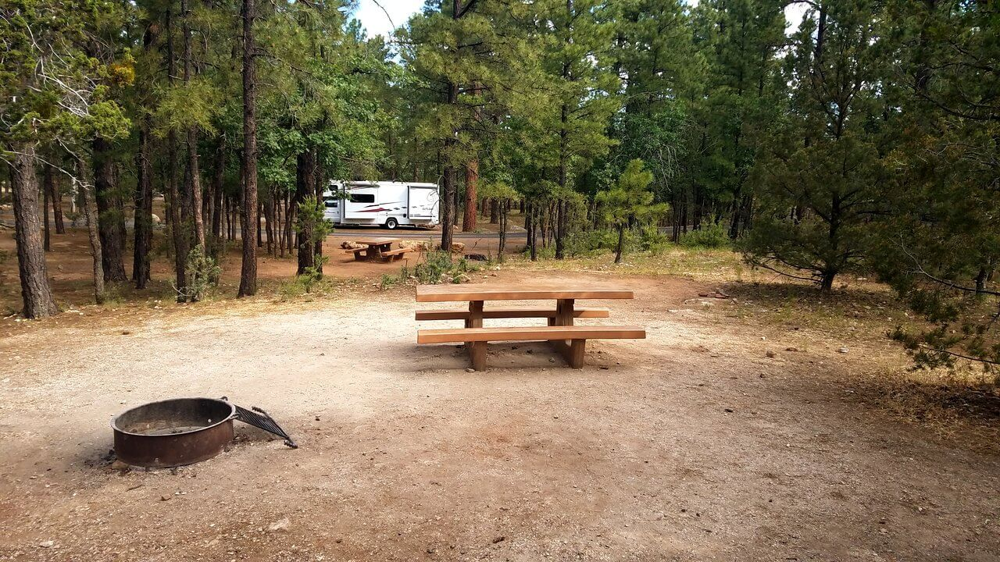

Camping at the Grand Canyon
Whenever you decide to go camping at the Grand Canyon. It would be great to know that there are two types of camping that are permitted at the Grand Canyon. You can choose to camp in the good campgrounds where you can park your rv or camper. Or, you might opt for the backpacking or dispersed camping options. The backpacking or dispersed camping is located just outside the developed camping areas and requires a Backcountry Permit. You can find information on the Backcountry Permit here. This permit carries a cost of $10 per permit and an additional fee of $8 per night per person.
Why is the Grand canyon separated in North and South Rim
A 277 mile long (446 km) canyon separates the park into South and North Rims. The Grand Canyon of the Colorado River is a mile-deep, (1.6 km) and creates a barrier that bisects the park. Even though the average distance across the canyon is only 10 miles/ 16 km, be aware that it is a five-hour drive of 215 miles/ 346 km between the park's South Rim Village and the North Rim Village. Scenery, climate and vegetation are noticably different between north and south rims because of differences in elevation. It is almost like having two parks in one and it takes time, planning and effort to be able to visit both sides of the Canyon in one trip.Mather Campground
- Recycling
- Campfire Rings
- Dump Station
- Flush Toilets
- Paved Sites
- Picnic Tables
- Trash Collection
- Laundry Facilities
- Drinking Water
- Emergency Services
- Shuttle Bus Service
- Emergency Services
- Horse Camping
- Wildlife Viewing
- Camping
- Photography
- Biking
- Swimming
- Whitewater Paddling
- Ranger Station
Bright Angel Campground
North Rim Campground
- No hook-ups, however, you will have access to a dump station on the campground.
- Water refill station available.
- Offers both tent and RV camping
- Restrooms available.
- Your Pets are allowed, but must be on a leashed at all times. Do not leave your pets unattended.
- Charcoal and wood fires are only permitted in the campsite grills provided.
- Laundry and showers are located at entrance to campground and are all coin operated.
- Drinking Water
- Convenience Store
- Campfire Rings
- Dump Station
- Host
- Parking
- Pets Allowed
- Picnic Tables
- Grills
- Picnic Table
- Grills/Fire Ring
- BBQ
- Flush Toilets
- Ranger Station
- Fire Pit
- Accessible Campsites
- Tent Only Nonelectric
- Group Tent Only Area Nonelectric
- Overnight
- Standard Nonelectric
Desert View Campground
Indian Garden Grand Canyon (Backcountry)
Location Havasupai St, Grand Canyon Village, AZ 86023.
The mather campground is located on the South Rim. This is the South Rim of the Grand Canyon National Park. The Grand Canyon has a very beautiful landscape that attracts over 5 million people per year and it shows this off with the Mather Campground. This campground is actually the only campground within the Grand Canyon Village. You will have many options for fun with biking and hiking trails being just a few miles from the location. The Mather Campground is a place you can go to sit back and relax in the summertime as the temperature gets up into the 80s. So it is warm and not too hot.
It has the following amenities available:Attractions Close By
You will not be disappointed if you choose to stay at the Mather Campground. There are many different restaurants, shops, museums, and many visitor centers. If you want to have a wide view of the Grand Canyon then you can visit a place called Desert View. This is a perfect place for taking great pictures.
Activities for you
Make the mather campground your next destination. You will not be disappointed.
Location: N Kaibab Trail, Grand Canyon Village, AZ 86023

The Bright Angel Campground is located about half a mile to the north of the Colorado River. The campsite here either line the creek or sit on the base of the cliff walls. There is plenty of shade provided by the cooton trees that you will come to appreciate in the hot summers. The best way to get a great spot is to plan ahead by getting your permit early. You can however get permits by walking in to see what is available.
You can mail postcards, play games, buy snacks, or buy a beer by traveling half a mile up the stream to the Phantom Ranch Canteen. For anyone who might need help getting in and out of the canyon, they can pay a small fee to have mules carry their gear. The Bright Angel has been used by many people over the years as a rest-stop whenever they go on long backpacking trips.
Location: North Rim, AZ 86052

The North Rim Campground and North Rim Visitor Center are closed for the 2020 Season
This campground offers 90 campsites at a cost of $18-$25 per night. Each group of visitors or individuals are only allowed to park a maximum of two vehicles on the campground at any given time. EAch site also allows up to 3 tents and 6 people per site. Campers have the option of hiking or biking in a communal setting right throughout the season. If you plan on taking this route, be sure to contact the kiosk office on the campground before arriving.
The group rate is only $50/night and can accommodate up to 25 people and 3 vehicles at a time.
P.S Be advised that any vehicle that tows another vehicle such as a pop-up, trailer, tent trailer, or any type of motor home pulling a vehicle will be considered as being two vehicles.
North Rim Campground General Information
To make reservations for this campground, visit Rec.Gov
Amenities:
Sites Available
Location: Route 64, Grand Canyon, AZ 86023
There is not much better ways for you to feel best 'on the edge' of the South Rim other than by getting yourself a camping spot in the Desert View Grand Canyon Camping Area. The Desert View roadway offers a some of the best views known to man. Behind this grand canyon camping site is the well-known Desert View watchtower that was built in 1932 by the world prominent designer known as Mary Jane Coulter. You're in luck if you're checking out this campground in the summertime. Campers can discover different offerings of shade for its tent-only areas, in addition to water, toilets, a shop and basic facilities. No reservations can be made for this campground as the Desert View Campground is a first come, first serve campground.
Reviews from TripAdivisorThis is a walk up only campground, since we didn't want to be disappointed driving 4 hours we booked a site just outside GC. We checked it out the next morning and found a great spot. Running water, flush toilets (altho one back up and flooded the mens room), and walking distance to Desert View lookout. A (very expensive) store is close by. Using a National Parks senior pass and sites are half price (as they are at most national park campgrounds). Lots of stars, deer, elk and coyotes baying in the night. The campgrounds are small (less than 60 sites) but provided some degree of privacy. Drive thru sites are also available for RV camping. It's located very close to the east entrance to the Grand Canyon so you avoid all the lines getting in.
When they hear about your experiences at Indian Garden Camping Site, your camping buddies will be put to shame. To get there, you need to trek about two-thirds (2/3) of the way into the Grand Canyon. You have to make this trek with all your equipment on hand. The canyon views make the journey rewarding-- the white, rose-colored, and rust-colored rock layers show evidence of millions of years of the earth's history. This produce the best background for your camping site.
A seasonal creek goes through the camping site, and lush rich grass, willows and cottonwood trees line the banks. Drawn in by the creek, the Native Americans also lived here for countless years prior to backpackers and hikers that found this unique location. Found simply off the Intense Angel Path, mule trains and hikers now stop at the Indian Garden campground for water and shade breaks. In the evening, the foot traffic lowers by a lot, and you're left with a completely clear sky of stars in among the most remote locations worldwide.
Every camping area has a shaded structure for everyone's pleasure, pack pole, picnic table, and storage cans for food.
Reviews from TripAdivisorThis is a remarkable green island of haven in the desert! It’s also the junction for the 2.4 km (one-way) trail to a Plateau Point (where the water was not working a few days ago, it being early season.) It did not seem well marked as some have said but we were coming up and so weren't tempted to take the wrong turn. It would be pretty evident if you did as it goes north at a pretty consistent elevation with minor ups and downs but your trail to the river trends gently downhill right away. Even though it was early season, there was quite a queue for water but it was cold and delicious and we found it, after the tortuous devils corkscrew, a delightful oasis of rest and hydration before the even more demanding switchbacks above on the way to Grand Canyon village. Two very large shade trees above the water source were diseased and needed to be cut down, I was sad to see. How I wish to someday spend a night here!
Grand Canyon Entrance Fees
Just like numerous significant U.S. national parks, there is an entry fee. The existing expense is $35 for each vehicle on the South and North rims. The West Rim is unfortunately not a part of the National Parks Service. Different vharges will be applied if you decide to travel to the West area of the park.
There is a yearly Grand Canyon National Park pass that cost ($70). This pass is valid for for one year starting from the purchase date.
Backcountry Camping
Open All YearTo camp in the park in an area other than an developed camping site on the rim you should get an authorization from the Backcountry Information Center. This consists of Bright Angel Camping area at the Phantom Cattle Ranch. All camping sites in the Inner Canyon need a backcountry authorization permit. It is always best to apply for a permit before making your journey to the Backcountry. There are however a few lucky people who will be able to purchase a permit upon arrival. But i would not take the chance of traveling here without being sure i will be able to enter. There is a cost of $10 for each permit plus an extra charge of $8 per per person for each night.
Planning on hunting at any of these parks? The list below will guide in the right direction to which park allows hunting
| Park Name | Waterfowl Hunting Allowed | Big Game and Upland Game Hunting Allowed |
|---|---|---|
| Anasazi State Park Museum | No | No |
| Antelope Island State Park | No | Big game only: Special permit required |
| Bear Lake State Park | Yes | Yes |
| Camp Floyd State Park Museum | No | No |
| Coral Pink Sand Dunes State Park | Yes | Yes |
| Dead Horse Point State Park | Yes, below the canyon rim | Yes, below the canyon rim |
| Deer Creek State Park | Yes | Yes |
| East Canyon State Park | Yes | Yes |
| Echo State Park | Yes | Yes |
| Edge of the Cedars State Park Museum | No | No |
| Escalante Petrified Forest State Park | Yes | Yes |
| Flight Park State Recreation Area | No | No |
| Fred Hayes State Park at Starvation | Yes | Yes |
| Fremont Indian State Park and Museum | Yes | Yes |
| Frontier Homestead State Park Museum | No | No |
| Goblin Valley State Park | Yes, except south of East Wildhorse Road | Yes, except south of East Wildhorse Road |
| Goosenecks State Park | No | No |
| Great Salt Lake State Park | No | No |
| Green River State Park and Golf Course | No | No |
| Gunlock State Park | Yes | Yes |
| Historic Union Pacific Rail Trail State Park | No | No |
| Huntington State Park | Yes | No |
| Hyrum Lake State Park | Yes | Yes |
| Jordanelle State Park | Yes | Yes |
| Jordan River Off-Highway Vehicle State Park | No | No |
| Kodachrome Basin State Park | Yes | Yes |
| Millsite State Park | Yes | No |
| Otter Creek State Park | Yes | No |
| Palisade State Park | Yes | Yes, but archery only for big game |
| Piute State Park | Yes | No |
| Quail Creek State Park | Yes | Yes |
| Red Fleet State Park | Yes | Yes |
| Rockport State Park | Yes | Yes |
| Sand Hollow State Park | Yes | No |
| Scofield State Park | Yes | Yes |
| Snow Canyon State Park | No | No |
| Steinaker State Park | Yes | Yes |
| Territorial Statehouse State Park Museum | No | No |
| This is the Place Heritage Park | No | No |
| Utah Field House of Natural History State Park Museum | No | No |
| Utah Lake State Park | No | No |
| Wasatch Mountain State Park | Yes | Yes |
| Willard Bay State Park | Yes | Yes |
| Yuba State Park | Yes | Yes |